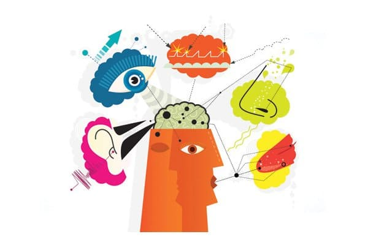

Это недавно открытое нарушение развития, при котором мозг сталкивается с трудностями при восприятии различных ощущений и преобразовании их в соответствующие двигательные или поведенческие реакции. Дети каждый день сталкиваются с бесчисленным множеством ощущений: ощущение одежды на коже, громкие шумы в переполненных помещениях, запахи и текстура различной пищи, качание и вращение на игровой площадке и липкие руки во время занятий лепкой. В то время как большинство детей обрабатывают эти ощущения без задержек, некоторые из них или все чрезмерно стимулируют центральную нервную систему ребенка с нарушением обработки сенсорной информации, и она не знает, как правильно на них реагировать. Результатом такого положения будет постоянный приток раздражающих входных сенсорных сигналов, которые мозг не может правильно обработать. Со временем и возрастом ребенок может в конечном итоге начать лучше отфильтровывать их и справляться с ними, но нарушение сенсорной интеграции попутно способствует нарушению развития, поскольку ребенок не взаимодействует надлежащим образом с окружающим миром. К счастью, нарушение сенсорной интеграции поддается лечению. Важно, как можно раньше распознать заболевание.
СИМПТОМЫ
Признаки будут варьировать в зависимости от возраста ребенка.
Нарушение сенсорной интеграции (НСИ) у младенцев.
Нарушение сенсорной интеграции у детей до 3 лет:
Нарушение сенсорной интеграции у детей дошкольного возраста.
Последствия нарушения сенсорной интеграции сильно различаются. Многие дети просто взрослеют, начинают правильно управлять ощущениями и не имеют никаких отклонений. Однако у некоторых нарушения сохраняются, и в школе они сталкиваются с некоторыми трудностями в понимании тонких нюансов социального поведения и взаимодействия со своими сверстниками. Это может привести к социальной незрелости, которую начинают замечать другие дети.
ЛЕЧЕНИЕ
Нарушение сенсорной интеграции обычно диагностируется детским специалистом по обучению навыкам. Его можно найти в детских больницах, медицинских центрах при университетах, в государственных программах развивающей терапии и частных центрах, которые лечат различные нарушения развития. Любой родитель, который подозревает, что у его ребенка может быть нарушение сенсорной интеграции, должен как можно скорее отвести его на обследование. Нарушение сенсорной интеграции может существовать само по себе или быть составляющей более серьезного нарушения развития, такого как аутизм. Лечение включает специализированные приемы трудотерапии, которые заключаются в том, что ребенка постепенно подвергают досаждающим ощущениям, благодаря чему он учится надлежащим образом обрабатывать их. Упражнения варьируют в зависимости от возраста и потребностей ребенка. Терапия должна проводиться под руководством специалиста по обучению навыкам, который специализируется на терапии сенсорной интеграции. Поскольку нарушение сенсорной интеграции открыто недавно, некоторые традиционные специалисты по обучению навыкам не умеют работать с ним.
Здоровье ребенка от докторов Сирс / Сирс У. и др.